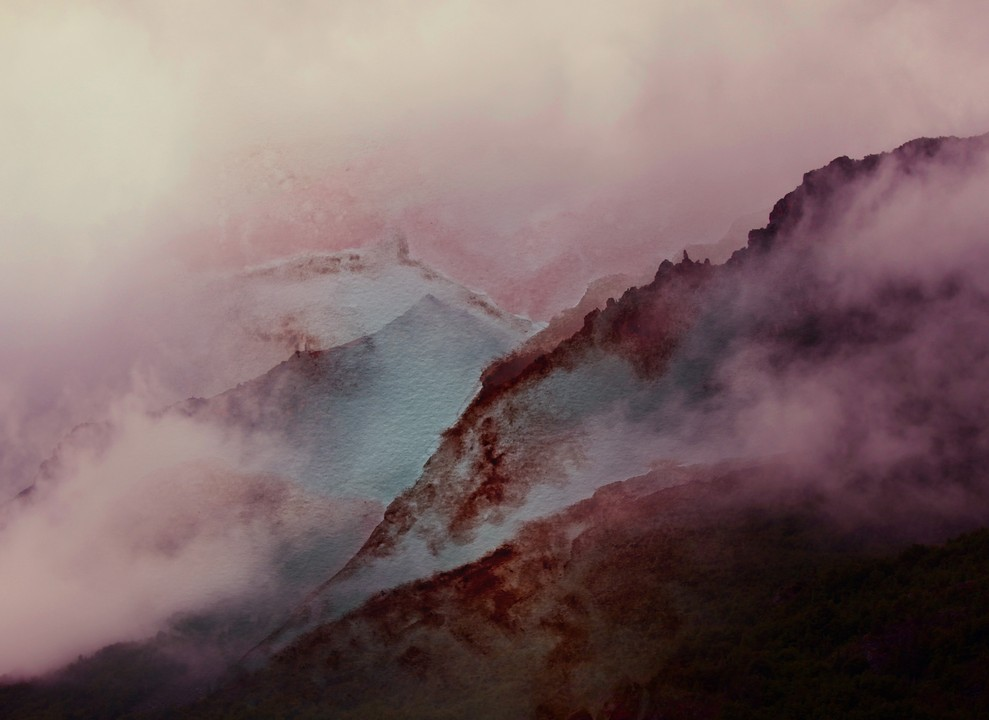
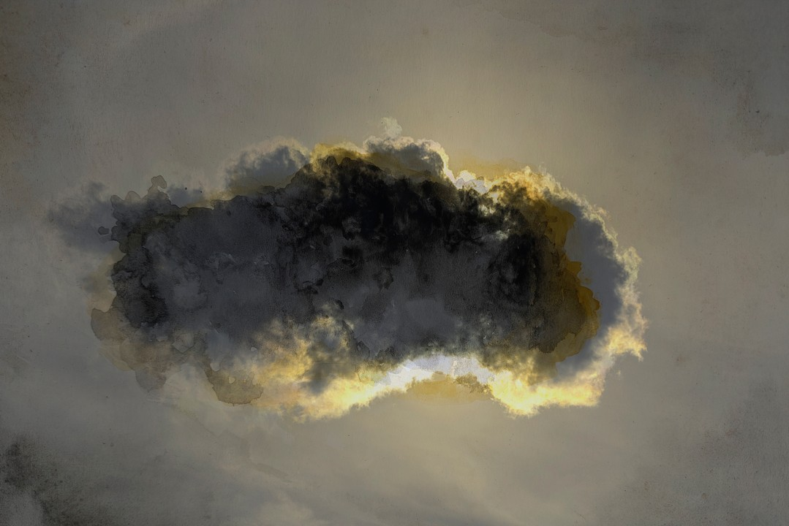
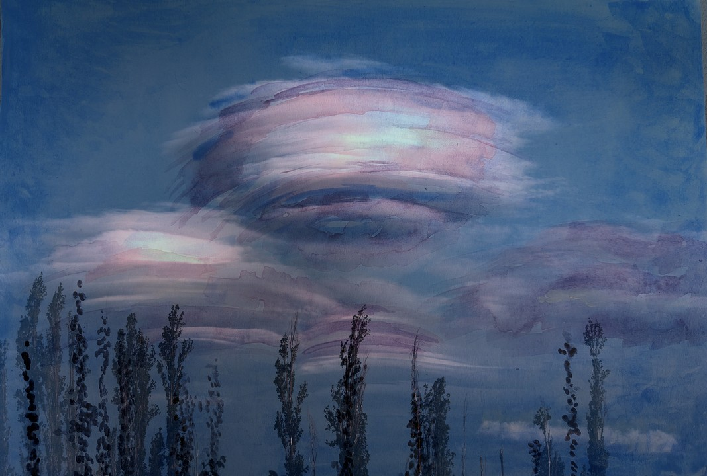
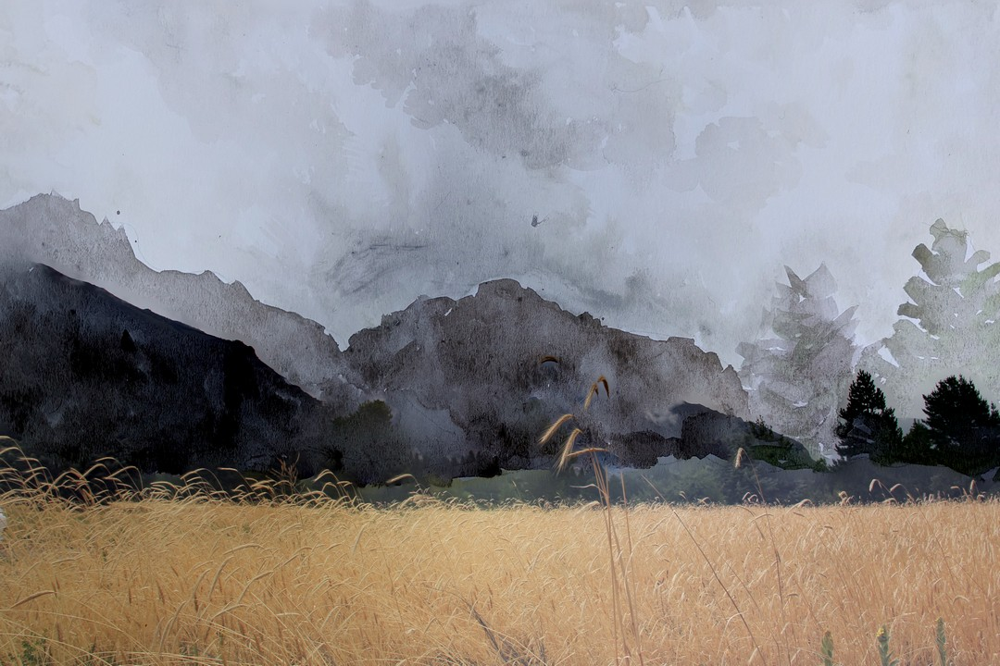
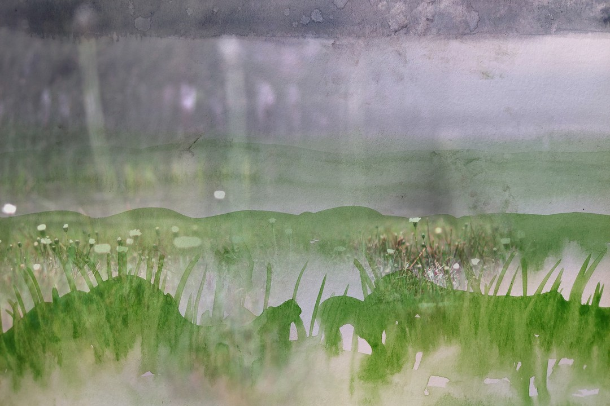
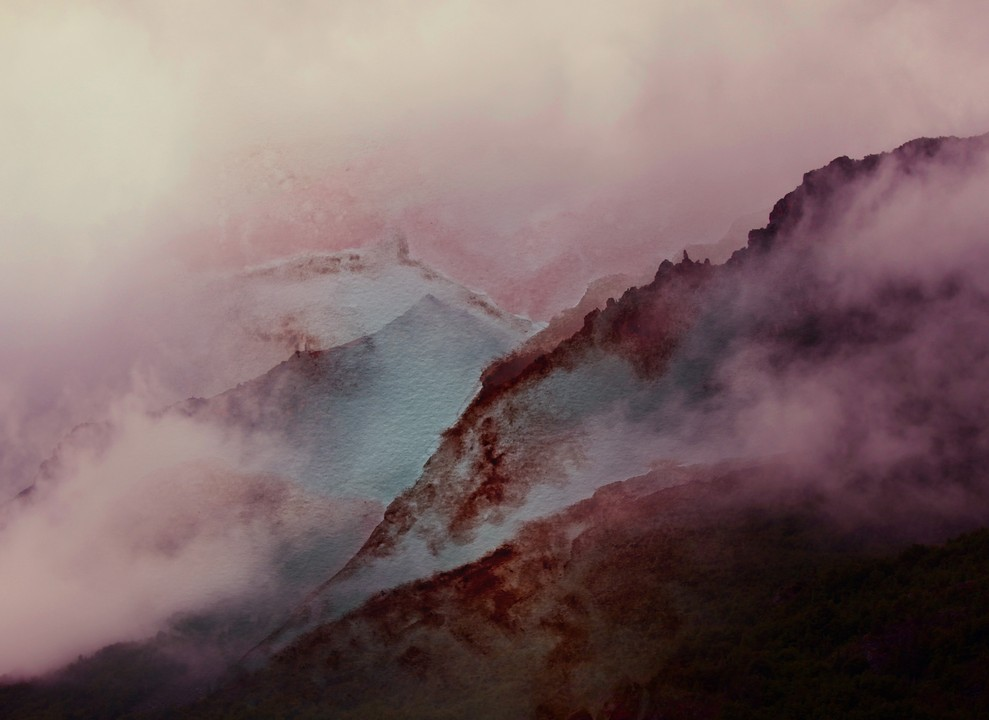
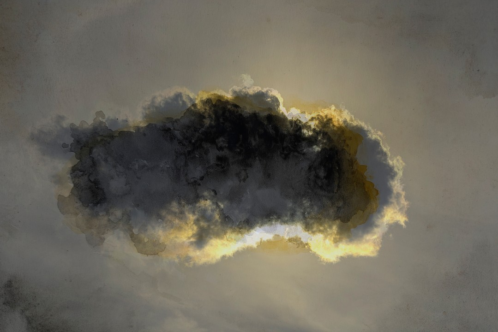
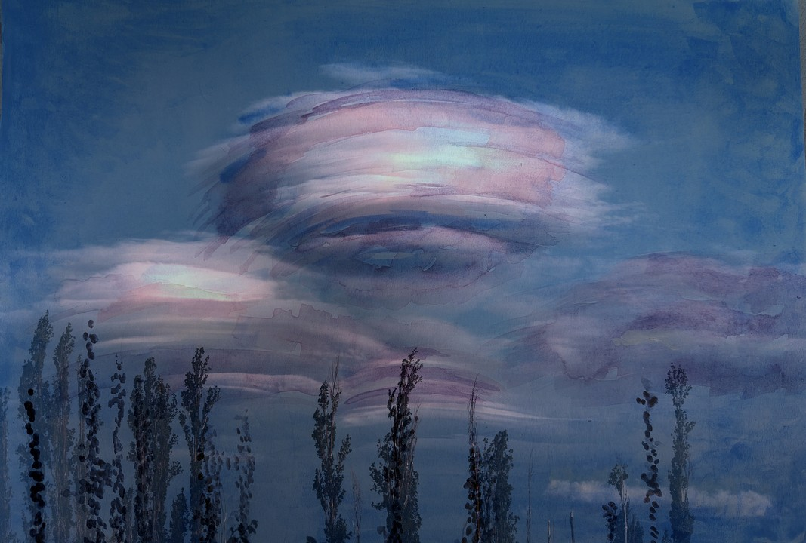
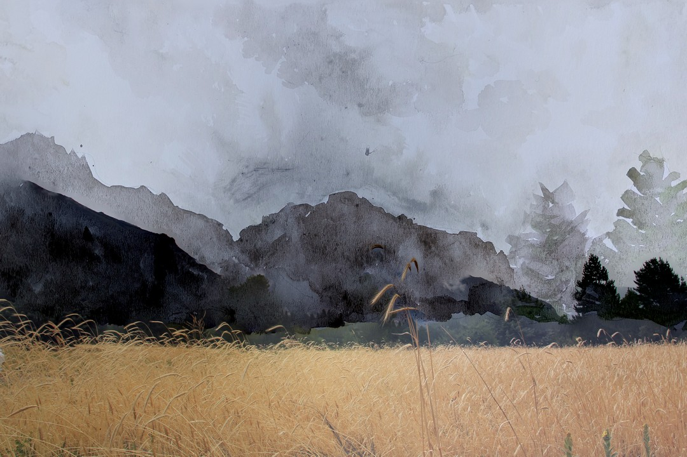
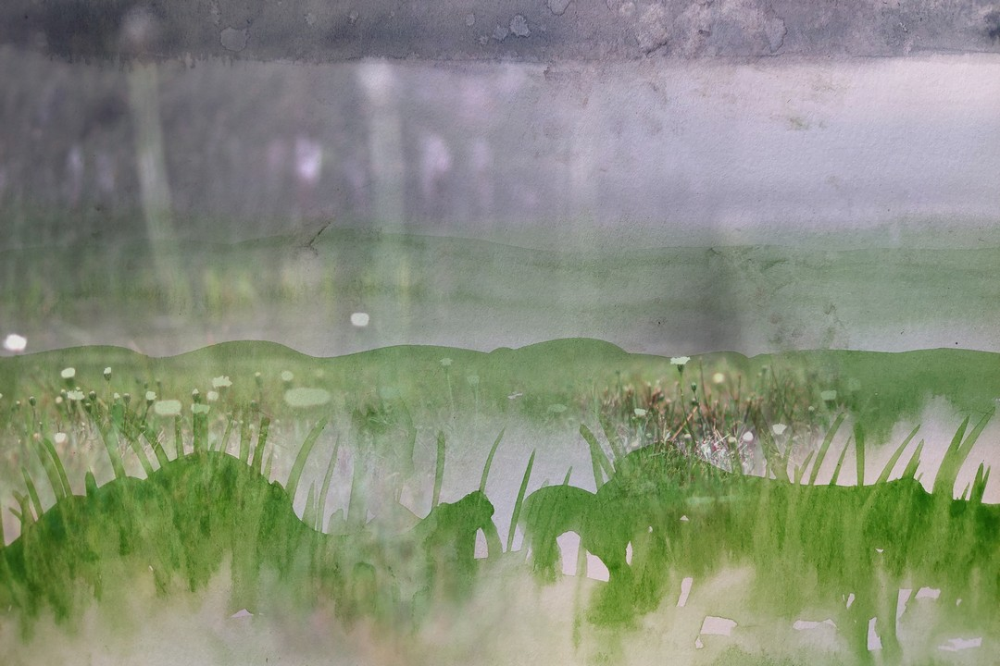

Iníciate en el mundo de la fotografía creativa utilizando recursos accesibles como smartphones. Un taller diseñado para despertar tu mirada artística y desarrollar tus habilidades fotográficas.
Estructura del Taller
Encuentro 1: Inspiración fotográfica
- Breve introducción a la historia de la fotografía
- Anécdotas y obras destacadas de fotógrafos/as inspiradores
- Conceptos básicos: luz, composición, encuadre y narración visual
- Ejercicios prácticos: análisis de fotos y reflexión grupal
Encuentro 2: Producción fotográfica
- Breve repaso de los conceptos vistos
- Fotografía en acción: salida práctica a un espacio natural cercano
- Asesoramiento personalizado durante la práctica
Encuentro 3: Edición y presentación
- Introducción a la edición fotográfica con aplicaciones gratuitas
- Organización de un álbum digital online
- Puesta en común y cierre del taller con una pequeña muestra grupal
Requisitos
Celular con cámara (preferentemente smartphone)
Espacio de almacenamiento suficiente para las fotos
Ganas de aprender y explorar la creatividad
El jardín
Sobre mí
Nací en Tapiales, Buenos Aires, Argentina, en 1959. Me gradué como Ingeniera Agrónoma y me desempeño como docente, investigadora y consultora en Biometría.
En 2004 comencé a explorar mi interés por la fotografía, dedicando parte de mi tiempo a formarme en este campo. Realicé cursos en el Centro Cultural Recoleta, en Motivarte, en la Escuela de Fotoperiodismo de A.R.G.R.A. también participé de los talleres de Tony Valdez (2013-2014) y Simón Chávez (2020-2021).
Seguí expandiendo mi visión artística a través de los talleres de artes visuales y pintura coordinados por Margarita Faure.
Actualmente, curso la Licenciatura en Artes Visuales con orientación a digitalización de imágenes en la UNA
Obras
Objetos
Imágenes
 








